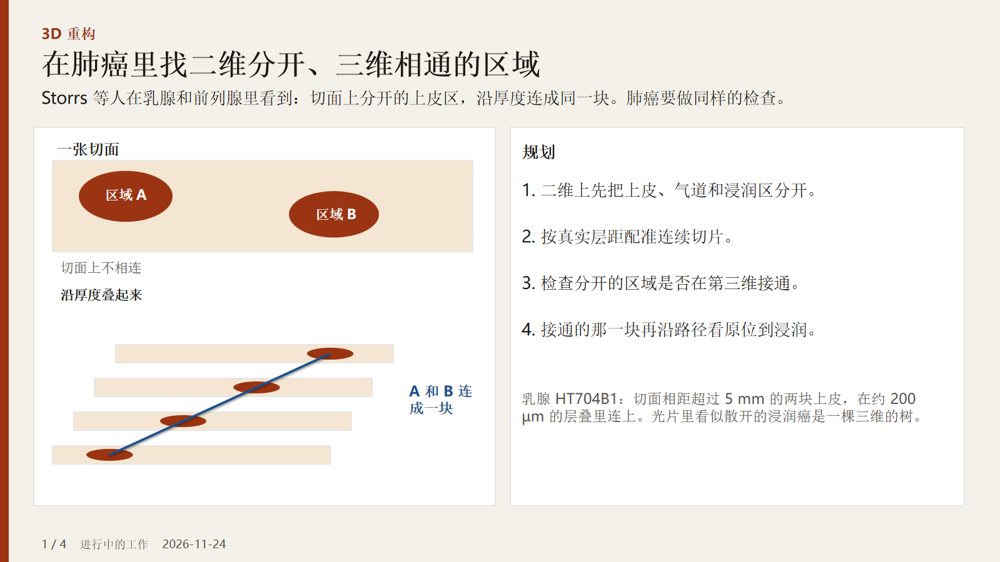
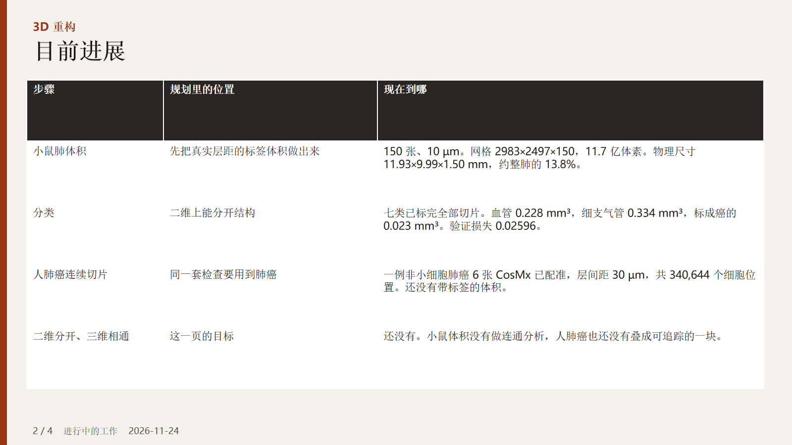
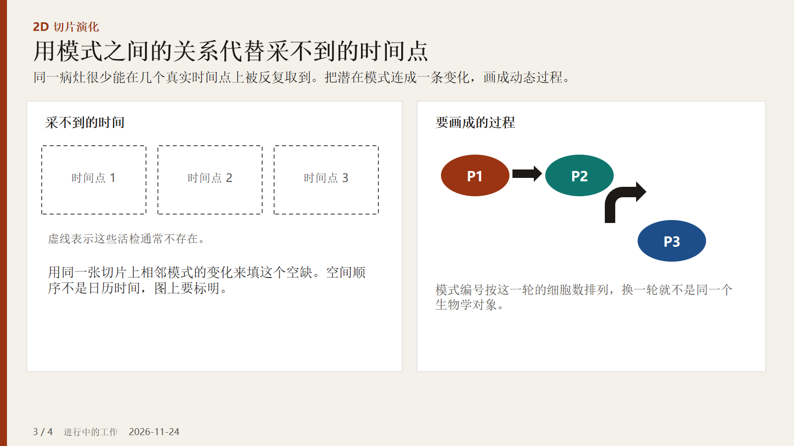

- H&E 预测空转
- 斑点上的基因表达
- 实测切片当锚
- HER2 相关 0.0788，门槛未过
四项进行中的工作
3D 重构、2D 切片演化、虚拟细胞、H&E 预测空转。每一项的目的分成生物学问题和临床问题，依据写在该节下面。原理、当前结果和还要走到的地方仍是这项工作自己的进度。
训练步数和 H&E 这一轮的相关记于 2026-11-24 17:14。3D 体积没有新测。2D 的公开页面是 17 张 Takano、800 µm、4 个模式，模式之间还没有画成动态过程。
| 项目 | 当前结果 | 入口 |
|---|---|---|
| 3D 重构 | 小鼠肺 150 张连续切片，1.5 mm 组织块，11.7 亿体素 | 体积页面 |
| 2D 切片演化 | 公开页面是 17 张 Takano、800 µm、4 个模式。模式之间还没有画成随时间变化的过程 | Annotile |
| 虚拟细胞 | 官方 fewshot 权重公布的表达变化相关是 K562 0.3638、RPE1 0.4891。我们自己划分上最好是 0.2564 和 0.4789，扰动数不同，不是同一批细胞 | 虚拟细胞页面 |
| H&E 预测空转 | HER2 四折平均相关 0.0788、SSIM 0.0447、高变基因 0.1267、空间可变基因 0.2236，四项门槛都未过 | MorphGate 文章 |
四项怎么连成数字孪生
用途
生物学尺度（由内向外套）
- 虚拟细胞
- 药物或基因扰动
- Tahoe 与 Orion
- 3388 分片，效应模型在训
- 2D 切片演化
- 相邻窗口的细胞组成
- 上皮、内皮、基质
- 17 张，4 个模式，还没有动态过程
- 3D 重构
- 真实层距的体积
- 病灶、结构、范围
- 小鼠肺 1.5 mm
- 数字孪生
- 内四层来自同一块组织
- 新测量写回各层
- 验证后才参与决定
从左到右，尺度一层套一层：分子在细胞内，细胞在邻域里，邻域在组织里，组织在这个病人里。圆之间的线表示这种包含。顶上的用途是综述里写下的目标。测量时的顺序是另一件事：先把切片配准成体积，再在体积里读邻域。
圆上是观测、结构、环境和行为。缺口还没接上：新测量能改回模型，并且来自同一块人肺癌，才开始是这个病人的数字孪生。Tan 等人的梯子是虚拟细胞、虚拟敲除、虚拟类器官、虚拟病人；前两级只是零件。只建一次、不再更新的，叫做数字影子。验证和不确定性还没有做，所以还不能拿来选药。
尺度分法来自 Bunne 等，Cell，2024，10.1016/j.cell.2024.11.015。Tan 等，Biomedicines，2026，14(11):2689。Kemkar 等，Frontiers in Physiology，2024，10.3389/fphys.2024.1473125。
3D 重构
目的
细胞团、导管和浸润前沿会随切的角度变。连续切片把形态和分子叠到同一套坐标。现在做的是小鼠肺的真实层距体积，还不是临床诊断。更大样本还没有证明三维病理已经提高诊断或预后。
Yoshikawa 等，Cancer Science，2024，10.1111/cas.16095。Kiemen 与 Wood，Annual Review of Cancer Biology，2026，10.1146/annurev-cancerbio-070924-011950。
原理
1 组织掩膜
2 相邻切片，仿射加弹性配准
3 DeepLabv3+、ResNet-50，5 张有标注
4 标完全部 150 张
5 按真实层距堆成体积
配准场套到分类图上。渲染用发射和吸收的光线行进，颜色是分类器自己的调色板。
当前结果
这块组织是 1,117,282,650 个体素，0.179 cm³，厚 1.5 mm。小鼠肺大约长 10 到 20 mm，所以不是整只肺的外形。发光把血管和气道画粗了。旋转视频是这同一个体积。人体解剖肺和程序生成的肺叶没有放进这个体积。
期待目标
Storrs 等人在乳腺和前列腺里看到：一张切面上分开的上皮区，沿切片厚度连成同一块。乳腺样本 HT704B1 上，切面距离超过 5 mm 的两块上皮，在大约 200 µm 的层叠里接上；光片成像里，看似散开的浸润癌在三维里是一棵连通的树，原位癌或高级别上皮内瘤变嵌在这棵树里，或正在变成浸润癌。肺癌这边要做的是同一件事：先在二维上把区域分开，再检查这些区域在第三维是否相通，并画出连通的那一块。
Storrs 等，Cancer Discovery，2026，Spatial Mapping of the Precancer-to-Cancer Transition in Breast and Prostate。
规划和图就在这一节里。


2D 切片演化
目的
生物学上，Mo 等人 2024 年在 Nature 里把要解决的问题写成：治疗抵抗的亚克隆怎么在空间里出现，肿瘤微环境又怎么推动抵抗。批量测序和把组织打散的单细胞测序都留不下位置。他们用空间转录组把被间质隔开的癌细胞团定义成肿瘤微区，再把带有同一套遗传改变的微区收成空间亚克隆，看亚克隆中心和边缘的代谢、抗原呈递，以及 T 细胞、巨噬细胞待在什么地方。
临床上，同一篇工作把原发和转移的生长方式分开，并在三维亚克隆周围看到免疫耗竭标志升高、免疫热区和冷区并存。这些局部结构被认为和治疗抵抗有关。他们自己的材料是六个癌种的 Visium，不是肺的 Xenium。这里的切片演化接到的是其中“位置上的组织状态如何相连”这一层：在一张切片里，从分化上皮出发，看相邻区域的细胞组成和表达怎么变。它还没有亚克隆的突变或拷贝数，也不能直接告诉一位病人该用哪种药。
Mo 等，Nature，2024，10.1038/s41586-024-08087-4。
原理
下面这棵树用的是三张人肺 Xenium。小窗边长 400 µm、至少 30 个细胞，共 785 个。特征是细胞类型比例、153 个共有基因的 16 个主成分，以及配准 H&E 的颜色和纹理。细簇再用高斯混合按 BIC 收成 8 个模式。相邻小窗同模式的比例是 83.6%。种子是 42。
进化关系按切片分开做。一步只能走在同一张切片上边相邻的小窗之间，代价是上面那份特征的距离。根是这张切片上分化上皮比例最高的小窗。做法对应 Pham 等人 2023 年的 pseudo-time-space。没有剪接和未剪接计数，所以没有 RNA velocity。三个供体没有接成一条轨迹。
当前结果
箭头画在配准后的 H&E 上。t-SNE 和 UMAP 里的灰线和红线是这棵空间树。视频约 8 秒，后面的肺是 BodyParts3D 外形。P2 上皮 z +1.38、增殖 −0.10。P3 增殖 +2.59、基质 +1.32、CXCL9 +2.01，主要来自 lc。面板里没有 ISG15、IFI27、IFIT3、HLA-DRA，所以没有患者级 archetype，也没有跨患者 ecotype。
2026-11-24 另有一次拟合，把队列加到 11 张切片，留下 1,329,253 个细胞、1,875 个窗口。共有基因降到 68 个，特征里没有 H&E，细簇 44 个，仍收成 8 个模式，相邻小窗同模式的比例是 83.4%。这次模式按平台分开。Annotile 公开页面现在是 17 张 Takano、800 µm、4 个模式。上面三张切片的树留在记录里，三个供体没有接成一条轨迹。
期待目标
同一块肿瘤很少能在几个真实时间点上被反复取到。下一步把已经分出的潜在模式连成进化关系，画成一个动态过程：从一个模式走到相邻的另一个模式，用空间上的相邻和细胞组成的变化代替缺失的时间序列。三张切片上已有的树只说明每张切片内部相邻，还不是这个动态过程。17 张、800 µm 的 4 个模式也还是一次静态划分。
规划和图就在这一节里。


虚拟细胞
目的
生物学上，Bunne 等人 2024 年在 Cell 的展望里把细胞写成理解健康和疾病的基本单位。现有模型还模拟不了细胞在不同状态下的行为和功能。他们提出的人工智能虚拟细胞，是直接从多尺度生物数据里学出来的模拟：分子、细胞和组织在不同条件、不同扰动下怎么变。要它具备的能力包括跨尺度的通用表示，以及可以解释的计算机实验。
临床上，同一篇展望把用途写成三件：找出新的药物靶点，预测细胞对扰动的反应，以及把假设的搜索扩大到做不完的实验之外。准确的细胞模型也被他们用来追疾病的原因。他们同时把评价标准、数据需求和可解释性列为还没完成的条件。这项工作里，Tahoe 是为这种大规模模拟准备的扰动细胞语料；浏览器里的小模型只用来看知识 token 这种结构怎么工作。两者都还没有识别出新靶点，也没有进入临床决策。
Bunne 等，Cell，2024，10.1016/j.cell.2024.11.015。
原理
大规模路线跟着虚拟细胞基座的想法：先在大量观察细胞上学细胞状态，再在扰动过的细胞上学转移。Tahoe-100M 的 3388 个训练分片和 Orion 的 332 个分片都已转成 h5。正在跑的是效应模型，对每个扰动预测强度、方向和幅度。种子是 42。K562 和 RPE1 留出。能跟 STATE 放在同一套 cell-eval 上比的，是下面这套集合到集合骨架；Tahoe 上的三头读出还没有接上图里的先验。
结构与 Epi-Duo 的共同骨架相同。模型 A 把表观证据收成边再做消息传递，模型 B 把每个基因最多 24 个顺式元件池化成一个向量。两条先验都从被敲基因和每个输出基因这两处进骨架。
浏览器里的实验站是另一件小得多的东西。它按 Arc 公开的 PIE 结构，把知识做成 token，在 16 个基因、若干细胞系和扰动的合成汇总表上训练一个能看懂的小模型。那张表的数字按细胞周期、TP53、mTOR、KRAS/MAPK 和干扰素几条通路书写，不是 Replogle 的原始计数，也不是 Tahoe。
当前结果
下面是四次训练里，每一项更好的那一次。STATE 这一列是我们从随机初始化重训的 state_sm，2 万步，final.ckpt，不是官方最好权重。种子是 42。Tahoe 上的三头效应模型还在训练，它的损失不是这张表。
| 留出 | 指标 | 最好的一次 | 分数 | 重训 state_sm | 和这次重训比 |
|---|---|---|---|---|---|
| K562 | 表达变化相关 | 候选网络，2 万步 | 0.2564 | 0.0644 | 更好 |
| K562 | 均方误差 | 顺式元件，2 万步 | 0.0049 | 0.0391 | 更好 |
| K562 | 扰动判别 | 候选网络，2 万步 | 0.6438 | 0.5368 | 更好 |
| K562 | 差异基因重叠 | 候选网络，2 万步 | 0.0980 | 0.0643 | 更好 |
| K562 | 变化方向一致 | 候选网络，10 万步 | 0.7415 | 0.5555 | 更好 |
| K562 | 显著基因召回 | 无先验，2 万步 | 0.4886 | 0.4962 | 还没有 |
| K562 | 显著基因秩相关 | 候选网络，2 万步 | 0.5509 | 0.5700 | 还没有 |
| RPE1 | 表达变化相关 | 顺式元件，2 万步 | 0.4789 | 0.3314 | 更好 |
| RPE1 | 均方误差 | 候选网络，2 万步 | 0.0128 | 0.0395 | 更好 |
| RPE1 | 扰动判别 | 候选网络，2 万步 | 0.6516 | 0.6245 | 更好 |
| RPE1 | 差异基因重叠 | 顺式元件，2 万步 | 0.2628 | 0.2035 | 更好 |
| RPE1 | 变化方向一致 | 顺式元件，2 万步 | 0.7696 | 0.6626 | 更好 |
| RPE1 | 显著基因召回 | 顺式元件，2 万步 | 0.6663 | 0.6571 | 更好 |
| RPE1 | 显著基因秩相关 | 候选网络，2 万步 | 0.4400 | 0.4530 | 还没有 |
均方误差越低越好，其余越高越好。K562 的表达变化相关，context_mean 是 0.2710，仍高于我们的 0.2564。K562 的扰动判别，perturb_mean 是 0.7129，仍高于我们的 0.6438。RPE1 的表达变化相关，context_mean 是 0.5504，仍高于我们的 0.4789。
官方 fewshot 的 best.ckpt 已公布 cell-eval。它是 X_hvg、隐藏维 328、10 万步。我们没有在自己的测试细胞上重跑。扰动数是官方 K562 968、RPE1 1061，我们是 913 和 899。
| 留出 | 指标 | 我们最好 | 官方 best.ckpt |
|---|---|---|---|
| K562 | 表达变化相关 | 0.2564 | 0.3638 |
| K562 | 均方误差 | 0.0049 | 0.0045 |
| K562 | 扰动判别 | 0.6438 | 0.7576 |
| K562 | 差异基因重叠 | 0.0980 | 0.2184 |
| K562 | 变化方向一致 | 0.7415 | 0.7470 |
| K562 | 显著基因召回 | 0.4886 | 0.2605 |
| RPE1 | 表达变化相关 | 0.4789 | 0.4891 |
| RPE1 | 均方误差 | 0.0128 | 0.0097 |
| RPE1 | 扰动判别 | 0.6516 | 0.7288 |
| RPE1 | 差异基因重叠 | 0.2628 | 0.2465 |
| RPE1 | 变化方向一致 | 0.7696 | 0.7608 |
| RPE1 | 显著基因召回 | 0.6663 | 0.2724 |
2026 挑战赛冠军 CellularAI 的测试总分是 0.4399。那是 cell-eval2 在 AC16、MOLM13、U-87MG 上把对照均值标成 0、实验重复标成 1 之后的平均，不能和上面的相关相减。训练用的 Billion Cell Atlas 不在公开仓库里，这里没有重跑。完整两张表在 虚拟细胞页面。
实验站可以在本地改学习率、步数和知识源开关，立刻看到预测曲线变。它说明 PIE 这一类结构怎么读 STRING 和 DepMap，不能当作这次效应模型的成绩。
期待目标
上面的表是集合到集合模型的 cell-eval。Tahoe 效应模型的训练损失仍然不能写成超过 STATE。表观残差还没有接到这次效应模型上。外部还有 2026 年虚拟细胞挑战赛的前三名。下图是官方公布的奖金，每一名都是一半现金、一半 NVIDIA Brev 额度。
第三名是 25,000 美元。Arc Institute，2026-11-19，Virtual Cell Challenge 2026: Winners and Wrap-Up。条的长度按公布金额。
H&E 预测空转
目的
生物学上，Wang 等人 2025 年的基准把空间基因表达写成理解疾病分子基础的一层：它给出组织坐标上谁在表达什么。成对的苏木精伊红图像如果能预测这层表达，常规染色切片就能带上空间分子信息。
临床上，同一篇基准把下游用途写成两件：用预测出的空间表达区分生存风险，以及认出病理上已有名称的区域。他们还把模型拿到 TCGA 的乳腺癌切片上做外部检验，因为医院里大量存档的就是这种染色切片，空间转录组则贵、也覆盖不了旧切片。他们的结论是：这些方法能从染色图像里预测出空间表达，但在没见过的 TCGA 数据上区分生存的能力有限，还没有准备好直接用于临床。这项工作沿他们的划分比较预测有多接近实测表达，生存分析和跨研究检验还没有做。
Wang 等，Nature Communications，2025，10.1038/s41467-025-56618-y。
原理
协议来自 Wang 等人 Nature Communications 2025 的基准。HER2 阳性乳腺癌和皮肤鳞癌各分四折，同一病人的相邻切片留在同一折。两折训练，一折验证，一折测试。报的是四个测试折的平均。基因是全体切片共有、方差最高的 785 个（HER2）和 997 个（cSCC）。高变基因是其中方差最高的 30 个。空间可变基因按阵列上 6 个近邻的 Moran's I 取 20 个。这和原文的 scran、SPARK-X 名单不完全一样。
文章里的 MorphGate 用斑点及其六个近邻的染色特征做岭回归。下图是门控：训练集上和染色特征的相关低于 0.10，这个基因就不拿图像去预测，每个斑点填成训练集均值。达到 0.10 的才进入回归。测试病人不参与这条线怎么划。
去掉门控则 785 或 997 个基因都回归。GHIST-spot 只保留组成关系：6 个表达程序，再用染色特征预测程序权重。Fu 等人原文的深度网络和 Hover-Net 细胞核分割没有重跑。原文报告的 0.16 写在表里单独一行。
文章之后又跑了一轮。斑点切成 224 像素，用冻结的 ImageNet ResNet-18 取 512 维，按切片居中，再做 64 维主成分和 6 近邻平均。验证折在岭回归、近邻检索、原型和混合里选一个。同一套四折和基因定义。
当前结果
条的长度是分数除以门槛。cSCC 后一轮是相关 0.1398、SSIM 0.0768、高变 0.1435、空间可变 0.1854，四项同样没过，文章因此没改。更早的对照：去掉门控的 HER2 是 0.071、0.045、0.072、0.141；GHIST-spot 是 0.044、0.018、0.044、0.063。文献里的 0.16、0.10、0.20、0.27 是原文数字。
下面是已经核对过文件清单或服务器副本的切片数。棕色是细胞分辨率，蓝色是斑点。
肺腺癌两行是 Takano。HER2ST 是 Andersson，36 张、8 个供体。皮肤鳞癌四折是 P2、P5、P9、P10，各 3 张。两行 Xenium 是 GSE311609 的文件清单，22 张肺来自 10 个供者，19 张乳腺来自 17 个供者。直肠癌 SPATNIC 的 52 例没有公开入口，没有画进这张图。
期待目标
在我们自己的这套定义上，HER2 四折平均同时超过相关 0.16、SSIM 0.10、高变基因相关 0.20、空间可变基因相关 0.27。四项都过了再改文章。没过之前，文章保持现在的对照，不把文献里的 0.16 画成这次重算的结果。